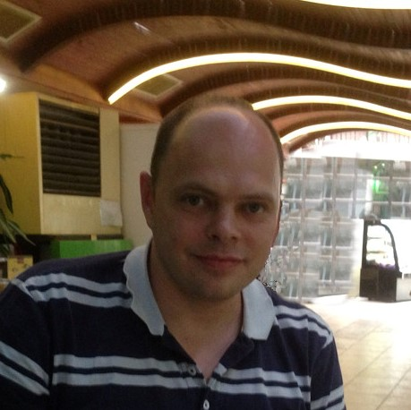

Sergei Youdachev

My name is Sergei Youdachev, my student number is S3925462 and my team is Team Exodus.
I was born and raised in Russia. There completed my ten-year education and after school
served in the army for two years. In 2001 I got Associate Degree in Software Engineering
and then joined a technical support team in an Internet company where I worked for 5 years.
In 2014, my family and I immigrated to Australia and we live in the Western suburbs of
Melbourne. Currently I work in a logistics company as a supervisor. I speak English and
Russian. I more than happy to be part of Exodus team and contribute my best in common
work.